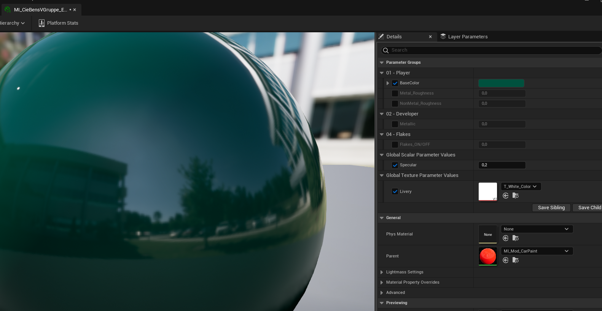
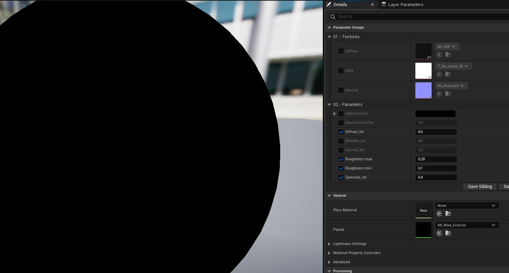
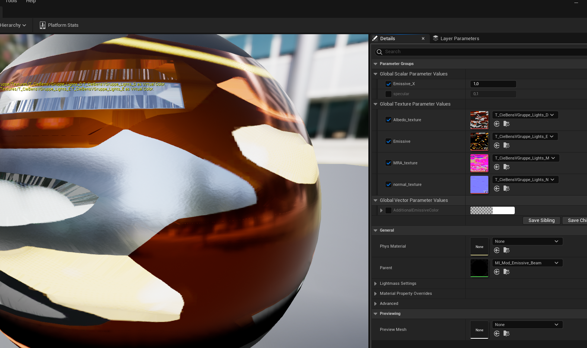
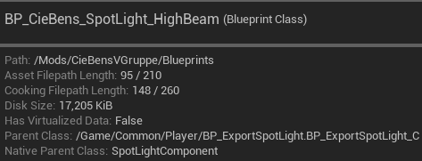
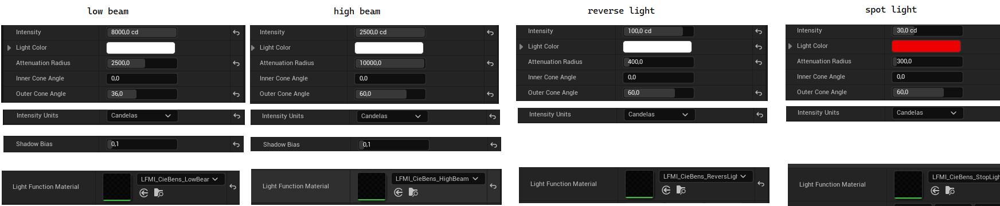
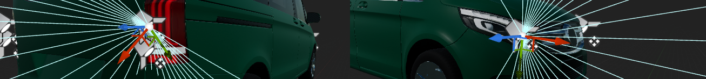
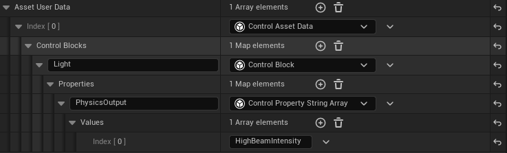
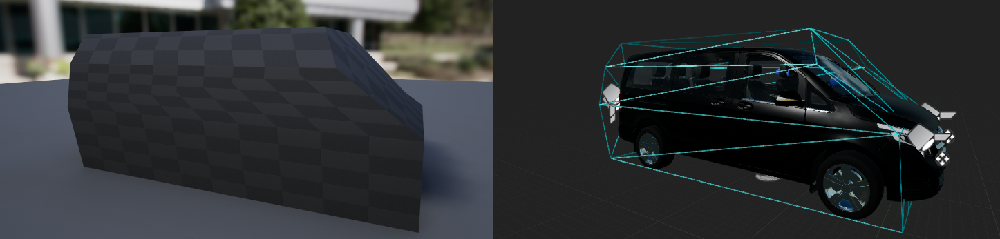
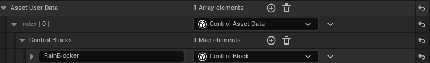

Навигация: README | 01. Минимальный автомобиль | 02. Экстерьер, свет и мир | 03. Салон, приборка и камеры | 04. Зеркала и дворники | 05. Звуки и FMOD | 06. Комплектации, логика и шпаргалка
После прохождения Модуля 1 ваш автомобиль уже ездит. В этом модуле мы доведём до ума внешний вид и взаимодействие с игровым миром:
Suspension*);LogicBox), топливный бак (FuelTank) и защиту салона от капель дождя (RainBlocker).Все материалы в модах — это PBR-материалы (Material Instance), унаследованные от подготовленных родительских материалов из папки Content/Common/MasterMaterials/VehicleMaterials/ModMaterials/ и работающие по 0-му UV-каналу.
| Карта | Назначение | Обязательные настройки в UE |
|---|---|---|
| Diffuse (Albedo) | Базовый цвет поверхности (RGB). | Virtual Texture Streaming = True |
| Normal | Карта нормалей (рельеф поверхности). | Virtual Texture Streaming = True |
| MRA | Комбинированная маска по каналам: • R — Metallic (металличность) • G — Roughness (шероховатость) • B — Ambient Occlusion (затенение) |
Virtual Texture Streaming = TrueCompression Settings = Masks (no sRGB) |
| Emissive | RGB-карта цвета свечения для ламп и фар. | Virtual Texture Streaming = True |
| Livery | RGB-карта ливреи/наклеек кузова; в альфа-канале хранится маска отделения ливреи от базовой краски. | Virtual Texture Streaming = True |
Чтобы увидеть все доступные параметры Material Instance, откройте его двойным кликом в Content Browser и поставьте галочку слева от нужного параметра в панели Details — тогда значение станет активным для редактирования. Рекомендуется также изучать готовые примеры материалов в Plugins/Mods Content/CieBensVGruppe/Materials/.
MI_Mod_CarPaintПозволяет настраивать базовую краску автомобиля, её блеск/металлик, а также подключать текстуру ливреи (Livery) с маской в альфа-канале.

MI_Mod_ExteriorИспользуется для любых деталей экстерьера, на которые не должна наноситься базовая краска автомобиля (молдинги, решётка радиатора, хромированные элементы, днище, диски колёс, суппорты).

MI_Mod_TyreСпециализированный материал для резиновых покрышек колёс.
MI_Mod_GlassИспользуется для прозрачных и цветных стёкол фар (плафонов), а также для лобового, боковых и заднего стёкол автомобиля.
Про стёкла (Inner / Outer) и капли дождя на стекле:
На текущий момент функционал капель дождя на стёклах в пользовательских (модерских) автомобилях ещё не реализован, поэтому жёстких требований по разделению стёкол нет — достаточно назначить MI_Mod_Glass на ваши меши стёкол.
Однако на будущее (когда поддержка капель и стирания дворниками появится для модов) потребуется разделять стёкла на внешние и внутренние поверхности (*_Outer и *_Inner), как это уже сделано в эталонной модели CieBensVGruppe/Meshes/.
Suspension*)Если на вашем автомобиле видны тормозные суппорты или поворотные кулаки, которые должны двигаться вверх-вниз на кочках и поворачиваться вместе с передними колёсами, но не вращаться вокруг оси колеса, используйте узлы Suspension*.

Y.Generate Missing Collision = False, Do Not Create Material.MI_Mod_Exterior.V_<ИмяМода>Body (рекомендуемое крепление для порядка в иерархии) 4 компонента StaticMeshComponent со строгими именами из XML-схемы:
SuspensionFrontLeftSuspensionFrontRightSuspensionBackLeftSuspensionBackRightCollision Presets = NoCollision и снимите Receives Decals.Location (в сантиметрах, положение максимально прожатой подвески, совпадающее с Mount в Vehicle.ini с инверсией Y) с узлов колёс на соответствующие узлы Suspension*.WheelFrontLeft, WheelFrontRight, WheelBackLeft, WheelBackRight) мышкой внутрь соответствующего Suspension* и обнулите у колёс Location = (0, 0, 0).
flowchart TD
Body["Body (StaticMeshComponent)"] --> SFL["SuspensionFrontLeft<br/>Location = Mount (см), NoCollision"]
Body --> SFR["SuspensionFrontRight<br/>Location = Mount (см), NoCollision"]
Body --> SBL["SuspensionBackLeft<br/>Location = Mount (см), NoCollision"]
Body --> SBR["SuspensionBackRight<br/>Location = Mount (см), NoCollision"]
SFL --> WFL["WheelFrontLeft<br/>Location = (0, 0, 0), NoCollision"]
SFR --> WFR["WheelFrontRight<br/>Location = (0, 0, 0), NoCollision"]
SBL --> WBL["WheelBackLeft<br/>Location = (0, 0, 0), NoCollision"]
SBR --> WBR["WheelBackRight<br/>Location = (0, 0, 0), NoCollision"]
В Unreal Engine и CCD 2.0 внешнее освещение состоит из двух разных частей:
Material Slot Name) на меше кузова.SpotLight на Акторе с ControlBlock Light.MI_Mod_Emissive_Beam)Для каждого типа ламп на 3D-модели кузова должен быть свой отдельный Material ID (слот материала).
Material Instance от MI_Mod_Emissive_Beam. Цвет лампы в выключенном состоянии задаётся через Albedo_texture, цвет свечения — через Emissive-текстуру.
Body) двойным кликом → в панели Details → Material Slots назначьте созданные материалы и переименуйте поле Slot Name строго по таблице ниже:Игре важно именно поле Slot Name внутри Static Mesh, а не имя файла MI_* в Content Browser!
Обязательное имя слота (Slot Name) |
Назначение |
|---|---|
LowBeam |
Лампа ближнего света |
HighBeam |
Лампа дальнего света |
ParkingLights |
Лампа габаритных огней |
FrontFogLights |
Лампа переднего противотуманного огня |
RearFogLights |
Лампа заднего противотуманного огня |
StopLight |
Лампа стоп-сигнала |
ReverseLight |
Лампа заднего хода |
LeftTurnLight |
Лампа левого указателя поворота |
RightTurnLight |
Лампа правого указателя поворота |
LicensePlates |
Лампочки подсветки номерного знака |
BP_ExportSpotLight / SpotLightComponent)В папке MyFirstCar/Blueprints/ рекомендуется заранее создать Blueprint-компоненты для каждого типа фар:
BP_ExportSpotLight (лежит в Content/Common/Player/BP_ExportSpotLight).SpotLightComponent.

LFM_VehicleLightSpot) и яркостиЕсли вы хотите, чтобы фара давала реалистичный рисунок светотеневой границы на асфальте:
Material Instance от LFM_VehicleLightSpot (лежит в Content/Common/MasterMaterials/VehicleMaterials/ModMaterials/Lights/LFM_VehicleLightSpot).Compression Settings = Alpha.LFMI_* в поле Light Function Material вашего источника света.Ориентировочные значения параметров из эталонного CieBensVGruppe:
| Тип фонаря | Intensity Units | Intensity | Attenuation Radius | Inner / Outer Cone Angle | Shadow Bias |
|---|---|---|---|---|---|
Ближний свет (LowBeam) |
Candelas |
8000.0 cd |
2500.0 |
0.0 / 36.0 |
0.1 |
Дальний свет (HighBeam) |
Candelas |
2500.0 cd |
10000.0 |
0.0 / 60.0 |
0.1 |
Задний ход (ReverseLight) |
Candelas |
100.0 cd |
400.0 |
0.0 / 60.0 |
— |
Стоп-сигнал (StopLight) |
Candelas |
30.0 cd |
300.0 |
0.0 / 60.0 |
— |

V_<ИмяМода>, добавьте созданные компоненты света к Body (или к DefaultSceneRoot) и расположите их точно на месте фар/фонарей.Y (зелёная) направлена вниз, ось Z (синяя) — в сторону, ось X (красная) — по направлению луча света.
ControlBlock LightНа каждом источнике света добавьте Asset User Data → Control Asset Data:
Control Block: LightProperties:
PhysicsOutputControl Property String ArrayValues добавьте одно или несколько имён выходных каналов физики (типа float), управляющих яркостью этого источника:
Значение в PhysicsOutput |
Чем управляет |
|---|---|
LowBeamIntensity |
Ближний свет |
HighBeamIntensity |
Дальний свет |
ParkingLightsIntensity |
Габаритные огни |
FrontFogLightsIntensity |
Передние противотуманные фары |
RearFogLightsIntensity |
Задние противотуманные фонари |
StopLightIntensity |
Стоп-сигналы |
ReverseLightIntensity |
Фонари заднего хода |
LeftTurnLightIntensity |
Левые указатели поворота |
RightTurnLightIntensity |
Правые указатели поворота |
LicensePlatesIntensity |
Подсветка номерного знака |
Не забудьте убедиться, что в Vehicle.ini в секции [CarElectrics] у всех используемых фонарей прописано положительное сопротивление (*_Resistance > 0) — подробнее см. VehicleLib_HTML/04_Components_Electrics.html.
LicensePlates)Игровые номера генерируются и подставляются игрой автоматически:
Slot Name = LicensePlates.MI_Mod_LicensePlate в папке ModMaterials для модов не используется.)0..1 точно так, как показано на примере ниже.SM_CieBensVGruppe_LicensePlate из Plugins/Mods Content/CieBensVGruppe/Meshes/ и разместите её на переднем и заднем бамперах вашего Актора (с NoCollision).
Эти 3 компонента не обязательны для базового старта, но необходимы, чтобы автомобиль полноценно работал со всеми механиками симулятора (АЗС, внутриигровые триггеры, дождь).
LogicBox)Нужна, чтобы интерактивные объекты, шлагбаумы, парковочные зоны и внутриигровые триггеры корректно определяли габариты вашего автомобиля.
V_<ИмяМода> добавьте компонент Box Collision (+ Add → Box Collision).Location, Rotation и Box Extent так, чтобы параллелепипед плотно охватывал габариты вашего автомобиля.ControlBlock с именем LogicBox (свойств добавлять не нужно).
FuelTank)Отвечает за работу заправки на АЗС.
SceneComponent (+ Add → Scene) и прикрепите его к компоненту с нулевыми трансформами относительно корня (например, напрямую к DefaultSceneRoot или Body).ControlBlock с именем FuelTank (свойств добавлять не нужно — важен сам факт наличия блока).RainBlocker)Чтобы капли падающего дождя не пролетали сквозь крышу внутрь салона:
SM_CieBensVGruppe_RainBlocker). Импортируйте без коллизии.StaticMeshComponent на Актор автомобиля (NoCollision, Receives Decals = False).MM_Wireframe (Content/Common/MasterMaterials/System/MM_Wireframe) — он не будет закрывать машину во вьюпорте, а в игре блокер невидим.ControlBlock с именем RainBlocker (без свойств).

Следующий шаг: переходите к Модулю 3. Салон, приборная панель, камеры и посадка водителя, чтобы оживить интерьер автомобиля и вид от первого лица.